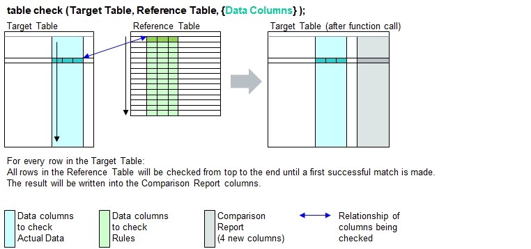
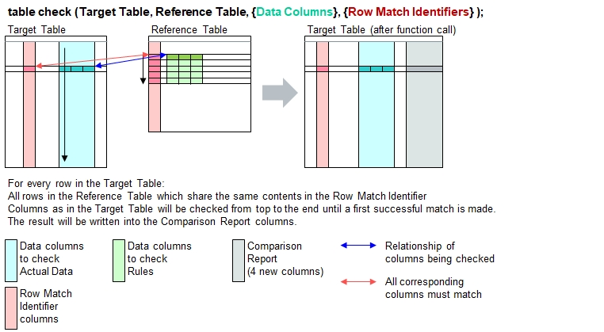
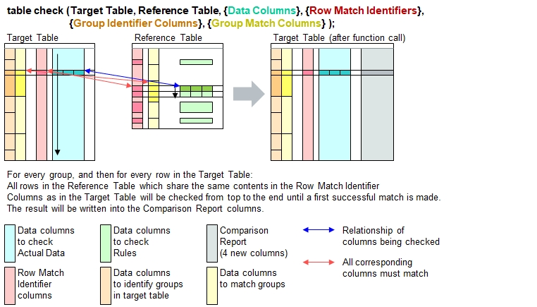
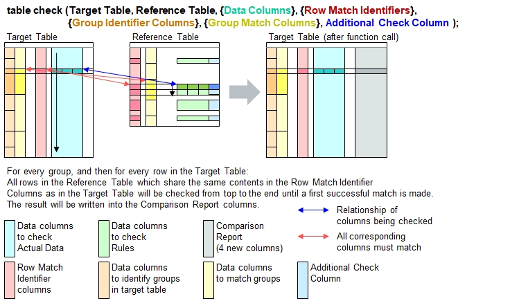
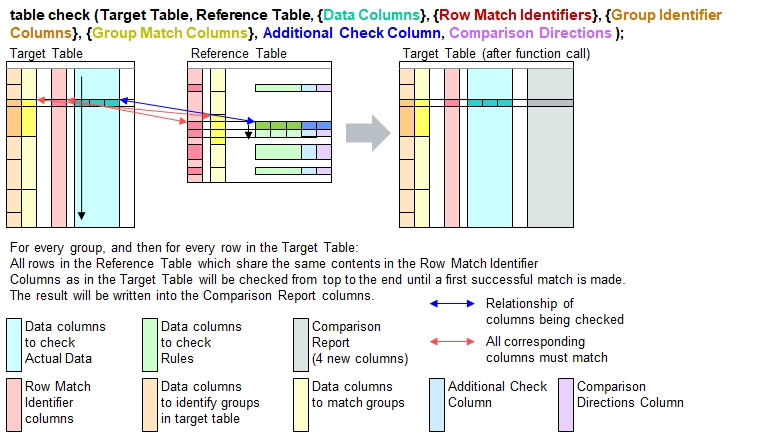

table check (...) with 3 Parameters

In the example below, the fuction call provides 3 parameters: Target and reference table, and checking for
the columns 'Hcp' and 'NTRP' (Golf handcap and tennis rating). The table entries are OK in following cases:
- A valid tennis rating is provided, and golf handicap does not matter.
- A valid handicap value is provided, but the player shall nto have any tennis rating (blank)
table load( target, "Examples/Tennis and Golf Players.csv" );
table list( target );
table keep columns( target, {Name, Sport, Hcp, NTRP} ); // Look how skilled they are
table initialize( ref,
{
// Hcp = Golf Handicap, NTRP = National Tennis Rating Program
{ Sport, Hcp, NTRP },
{ Tennis, '*', 'Lvl ?.0,Lvl ?.5' },
{ Golf, '0..54', '' }
} );
table check( target, ref, {Hcp, NTRP} );
table list( target );
0 : Name | Gender | Hcp | NTRP | Sport
1 : Mike | male | 24 | | Golf
2 : Jan | Male | 30 | | Golf
3 : Tina | female | 36 | | Golf
4 : Nico | male | 99 | | Golf
5 : | male | 45 | Lvl 1.0 | Golf
6 : Lynn | female | | Lvl 4.5 | Tennis
7 : Yves | female | | Lvl 2.0 | Squash
8 : Zoë | female | 18 | Lvl 1.5 | Tennis
9 : Chris | male | | Lvl 3.0 | Tennis
10 : Willy | male | | Lvl 6.1 | Tennis
11 : Andy | male | | | Tennis
0 : Name | Sport | Hcp | NTRP | Row Result | Group Result | Explanations | Ref Row
1 : Mike | Golf | 24 | | OK | Not OK | | 2
2 : Jan | Golf | 30 | | OK | Not OK | | 2
3 : Tina | Golf | 36 | | OK | Not OK | | 2
4 : Nico | Golf | 99 | | Mismatch | Not OK | [NTRP] = 'Lvl ?.0,Lvl ?.5'? | 2
: | | | | | | [Hcp] = '0..54'? |
5 : | Golf | 45 | Lvl 1.0 | OK | Not OK | | 1
6 : Lynn | Tennis | | Lvl 4.5 | OK | Not OK | | 1
7 : Yves | Squash | | Lvl 2.0 | OK | Not OK | | 1
8 : Zoë | Tennis | 18 | Lvl 1.5 | OK | Not OK | | 1
9 : Chris | Tennis | | Lvl 3.0 | OK | Not OK | | 1
10 : Willy | Tennis | | Lvl 6.1 | Mismatch | Not OK | [NTRP] = 'Lvl ?.0,Lvl ?.5'? | 2
: | | | | | | [Hcp] = '0..54'? |
11 : Andy | Tennis | | | Mismatch | Not OK | [NTRP] = 'Lvl ?.0,Lvl ?.5'? | 2
: | | | | | | [Hcp] = '0..54'? |
table check (...) with 4 Parameters
In the previous table, the same checks have been applied to both tennis and golf players, and indicate if the target table contains
sports not listed in the reference table. This is done by specifying common row match identifiers for both tables.
In the discussed example it's the column "Sport".

In the example below, the fuction call provides 4 parameters: Target and reference table, and checking for
the columns 'Hcp' and 'NTRP' (Golf handcap and tennis rating). The table entries are OK in following cases:
- If the person favors Golf (column 'Sport' conains 'Golf'), then the handicap will be checked.
- If the person favors Tennis, then the NTRP rating will be checked.
- A valid handicap value is provided, but the player shall nto have any tennis rating (blank)
table load( target, "Examples/Tennis and Golf Players.csv" );
// table list( target ); // See previous section. It's the same table.
table keep columns( target, {Name, Sport, Hcp, NTRP} ); // Look how skilled they are
table initialize( ref,
{
// Hcp = Golf Handicap, NTRP = National Tennis Rating Program
{ Sport, Hcp, NTRP },
{ Tennis, '*', 'Lvl ?.0,Lvl ?.5' },
{ Golf, '0..54', '' }
} );
table check( target, ref, {Hcp, NTRP}, Sport );
table list( target ); 0 : Name | Sport | Hcp | NTRP | Row Result | Group Result | Explanations | Ref Row
1 : Mike | Golf | 24 | | OK | Not OK | | 2
2 : Jan | Golf | 30 | | OK | Not OK | | 2
3 : Tina | Golf | 36 | | OK | Not OK | | 2
4 : Nico | Golf | 99 | | Mismatch | Not OK | [Hcp] = '0..54'? | 2
5 : | Golf | 45 | Lvl 1.0 | Mismatch | Not OK | [NTRP] = ''? | 2
6 : Lynn | Tennis | | Lvl 4.5 | OK | Not OK | | 1
7 : Yves | Squash | | Lvl 2.0 | Not in ref list | Not OK | |
8 : Zoë | Tennis | 18 | Lvl 1.5 | OK | Not OK | | 1
9 : Chris | Tennis | | Lvl 3.0 | OK | Not OK | | 1
10 : Willy | Tennis | | Lvl 6.1 | Mismatch | Not OK | [NTRP] = 'Lvl ?.0,Lvl ?.5'? | 1
11 : Andy | Tennis | | | Mismatch | Not OK | [NTRP] = 'Lvl ?.0,Lvl ?.5'? | 1
table check (...) with 6 Parameters
Advanced table checking is possible where different groups can be defined in order to apply different checking rules which can even be independent from each other.

Let's check some sophisticated tables: A list of electrical equipment for different locomotives which need to be checked against different contents.
- Locomotives: AC locomotive, Hybrid locomotive (runs on AC power and Diesel), and DE Loco (Diesel)
- 2 Groups: Different rules applicable to DE-Locos and the remaining locos
- Every locomotive contains equipment like traction converter, motor, gear, etc.
- Every equipment has different parameters (e.g.: Qty (numbers of units per locomotive), power, speed, weight).
Because the output file contains more columns than they fit in this screen, click on the following hyperlink to open the output as HTML file
Open output as HTML file in a separate tab
table load( products, "Examples/Table Check Target In.csv" );
table load( ref, "Examples/Table Check Reference In.csv" );
echo("Target table: Locomotives with technical data");
table list( products );
table check ( products, ref, {Power,Speed,Qty}, Equipment, Vehicle Name, Vehicle Type );
echo("Reference table");
table list( ref );
table save( products, "Images/Table Check Reference Output 03.html", HTML );Target table: Locomotives with technical data
0 : Vehicle Name | Vehicle Type | Equipment | Power | Speed | Qty | Comments
1 : AC Loco | E-Loco | Converter | 5400 | | 2 |
2 : AC Loco | E-Loco | Motor | 1200 | 160 | 4 |
3 : AC Loco | E-Loco | Gear | | 140 | 4 | Different speeds
4 : AC Loco | E-Loco | Control | | | 1 | Safe TCMS
5 : AC Hybrid | E-Loco | Converter | 6000 | | 1 |
6 : AC Hybrid | E-Loco | Motor | 6000 | 120 | 4 | Power too high, speed too low
7 : AC Hybrid | E-Loco | Motor | 1000 | 150 | 4 | But 2 motors listed
8 : AC Hybrid | E-Loco | Control | | | 1 |
9 : AC Hybrid | E-Loco | Bogie | | 150 | | Bogie not in reference list
10 : AC Hybrid | E-Loco | Engine | 300 | | 1 |
11 : DE Loco | DE-Loco | Engine | 2000 | | 4 | Alternator missing !
12 : DE Loco | DE-Loco | Converter | 2400 | | 1 |
13 : DE Loco | DE-Loco | Motor | 600 | 140 | 4 | Wrong power
14 : DE Loco | DE-Loco | Gear | | | 4 |
15 : DE Loco | DE-Loco | Control | | | 4 |
Reference table
0 : Vehicle Type | Equipment | Power | Speed | Qty | Additional Check | Quantity Check
1 : E-Loco | Converter | 5000..6000 | | 1..2 | |
2 : E-Loco | Motor | 1000..1500 | 140..200 | 4 | | equal 1
3 : E-Loco | Gear | * | * | 4 | |
4 : E-Loco | Control | * | * | 1 | [Comments]='*Safe*' |
5 : E-Loco | Engine | 300 | | 1 | |
6 : DE-Loco | Engine | 1700..2400 | | 1 | |
7 : DE-Loco | Engine | 425..600 | | 4 | |
8 : DE-Loco | Alternator | 1700..2400 | | 1 | | min 1
9 : DE-Loco | Alternator | 425..600 | | 4 | | min 1
10 : DE-Loco | Converter | 2400 | | 1 | |
11 : DE-Loco | Motor | 425..600 | 100..140 | 4 | |
12 : DE-Loco | Gear | | | 4 | |
13 : DE-Loco | Control | | | 4 | |
table check (...) with 7 Parameters
The function expects an additional column in the reference table which may contain expressions which return Boolean values.
The row is considered OK if true is returned, otherwise it's Mismatch. Blank rows will be ignored.
Exceptions will be asserted if the returned value is not Boolean.
Partial table specifications refer directly to the columns in the target table and not the reference table.

In the reference table, the column [Comments] is checked if it contains 'Safe', provided this is in relation to
Vehicle Type being "E-Locos" and "Equipment" being "Control". The resulting table now contains 1 additional message:
The "Control" for hybrid locomotives contains no remark such as "Safe Electronics" in the column "Comments".
Because the output file contains more columns than they fit in this screen, click on the following hyperlink to open the output as HTML file
Open output as HTML file in a separate tab
table load( products, "Examples/Table Check Target In.csv" ); // Same tables as in previous example.
table load( ref, "Examples/Table Check Reference In.csv" ); // They will not be listed here again
table check ( products, ref, {Power,Speed,Qty}, Equipment, Vehicle Name, Vehicle Type, Additional Check );
echo("Reference table");
table list( ref );
table save( products, "Images/Table Check Reference Output 04.html", HTML );Reference table
0 : Vehicle Type | Equipment | Power | Speed | Qty | Additional Check | Quantity Check
1 : E-Loco | Converter | 5000..6000 | | 1..2 | |
2 : E-Loco | Motor | 1000..1500 | 140..200 | 4 | | equal 1
3 : E-Loco | Gear | * | * | 4 | |
4 : E-Loco | Control | * | * | 1 | [Comments]='*Safe*' |
5 : E-Loco | Engine | 300 | | 1 | |
6 : DE-Loco | Engine | 1700..2400 | | 1 | |
7 : DE-Loco | Engine | 425..600 | | 4 | |
8 : DE-Loco | Alternator | 1700..2400 | | 1 | | min 1
9 : DE-Loco | Alternator | 425..600 | | 4 | | min 1
10 : DE-Loco | Converter | 2400 | | 1 | |
11 : DE-Loco | Motor | 425..600 | 100..140 | 4 | |
12 : DE-Loco | Gear | | | 4 | |
13 : DE-Loco | Control | | | 4 | |
table check (...) with 8 Parameters
This last example also considers comparison directions as additional rules. Before that, "min 1" has been the standard rule.

Because the output file contains more columns than they fit in this screen, click on the following hyperlink to open the output as HTML file
Open output as HTML file in a separate tab
table load( products, "Examples/Table Check Target In.csv" ); // Same tables as in previous example.
table load( ref, "Examples/Table Check Reference In.csv" ); // They will not be listed here again
table check ( products, ref, {Power,Speed,Qty}, Equipment, Vehicle Name, Vehicle Type, Additional Check, Quantity Check);
echo("Reference table");
table list( ref );
table save( products, "Images/Table Check Reference Output 05.html", HTML );Reference table
0 : Vehicle Type | Equipment | Power | Speed | Qty | Additional Check | Quantity Check
1 : E-Loco | Converter | 5000..6000 | | 1..2 | |
2 : E-Loco | Motor | 1000..1500 | 140..200 | 4 | | equal 1
3 : E-Loco | Gear | * | * | 4 | |
4 : E-Loco | Control | * | * | 1 | [Comments]='*Safe*' |
5 : E-Loco | Engine | 300 | | 1 | |
6 : DE-Loco | Engine | 1700..2400 | | 1 | |
7 : DE-Loco | Engine | 425..600 | | 4 | |
8 : DE-Loco | Alternator | 1700..2400 | | 1 | | min 1
9 : DE-Loco | Alternator | 425..600 | | 4 | | min 1
10 : DE-Loco | Converter | 2400 | | 1 | |
11 : DE-Loco | Motor | 425..600 | 100..140 | 4 | |
12 : DE-Loco | Gear | | | 4 | |
13 : DE-Loco | Control | | | 4 | |